地政学
ナジャメナはチャリ川の対岸にカメルーンを望む国境首都です。湖チャド流域、スーダン、中央アフリカ、リビア方面の不安定さが外交、治安、避難、物価へ響き、国家の中枢と辺境の緊張が同じ街に現れます。今も響きます。
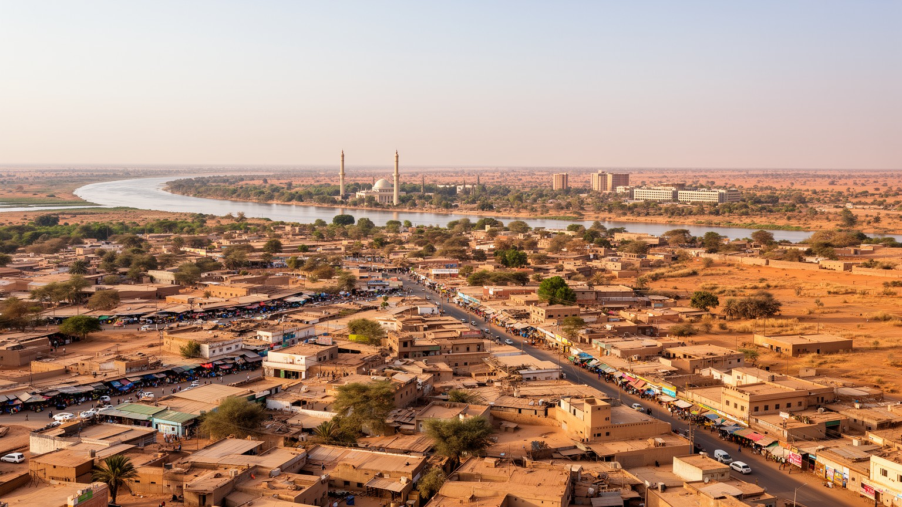
🇹🇩 チャド / シャリ＝バギルミ周縁 / World City Atlas
チャリ川とロゴン川の合流点に広がるチャドの首都です。カメルーン国境、市場、軍と国家機関、サヘルの乾季、洪水、避難民、イスラムとキリスト教の生活が近い距離で重なります。
都市の骨格
ナジャメナは内陸国家チャドの首都であり、対岸のカメルーン側クッセリと一体の生活圏を作ります。市場、行政、軍、援助機関、川の水位、砂塵、雨季の泥道が、国家の政治と日々の買い物を同じ街路に置きます。
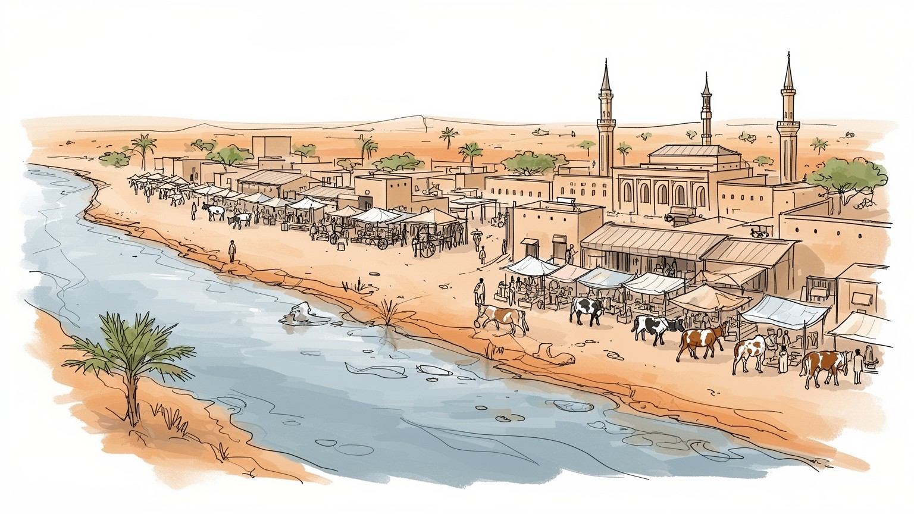
ナジャメナはチャリ川の対岸にカメルーンを望む国境首都です。湖チャド流域、スーダン、中央アフリカ、リビア方面の不安定さが外交、治安、避難、物価へ響き、国家の中枢と辺境の緊張が同じ街に現れます。今も響きます。
行政、商業、畜産流通、建設、食品加工、運輸、援助機関が雇用を作ります。石油収入は国家財政を支えますが、市場の小売、運転手、荷役、露店、家事労働、学校周りの小商いが生活を支えます。賃金の差も大きい焦点です。
アラビア語とフランス語、サラやカヌリなど多様な言語、イスラムの礼拝、教会、家族儀礼、市場の食、茶、音楽も響きます。宗教は対立の記号だけでなく、葬送、結婚、助け合い、商売の信用を結びます。暦も作ります。
旅行者は博物館、市場、川辺、モスクを慎重に訪ねますが、住民の日常は暑さ、水、停電、交通、家賃、食料価格、洪水、治安情報に左右されます。観光よりも生活の厚みを読むべき都市です。慎重な目線が必要です。
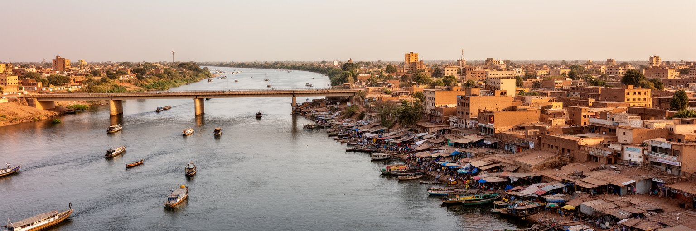
ナジャメナの形は、チャリ川とロゴン川の合流点によって決まります。川は水と漁、洗濯、野菜、砂の採取、渡し、橋、国境管理をもたらし、同時に洪水の危険も運びます。対岸のカメルーン側クッセリとは親族、商売、通勤、買い物が続き、国境は地図の線である前に日々の交渉です。内陸のチャドにとって、この川沿いの首都は南方の農業地帯、湖チャド周辺、カメルーンの港へ向かう交通の結節になります。乾季には砂塵と低い水位が街を覆い、雨季には泥と冠水が道路や市場の動きを変えます。川辺の低地に住む人ほど水害と衛生の負担を受けやすく、堤防や排水、橋の管理は都市福祉の焦点になります。ナジャメナを読むには、官庁街や幹線道路だけでなく、川岸の小舟、荷車、露店、検問、雨上がりのぬかるみまで見る必要があります。川は首都を外へ開く入口であり、同時に不安定な環境条件そのものでもあります。川岸の土地は安く住みやすい一方で、増水時には家財と仕事を失いやすいです。水を汲む場所、魚を売る場所、橋を渡る時間、検問の有無が、家庭の一日の計画を左右します。国境都市の実感は、外交文書よりも、川を越えて戻って来る人と品物の流れに表れます。小さな舟や荷車の往来は、制度が止まっても生活が道を探すことを示します。川を読むことは、首都の柔軟さと危うさを同時に読むことです。水辺は都市の記憶も運びます。
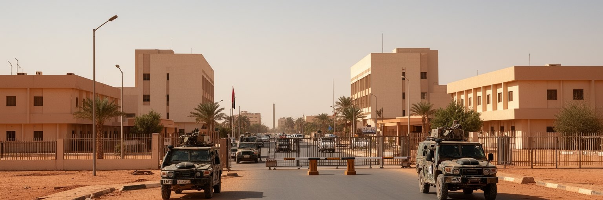
ナジャメナはチャドの行政首都であり、大統領府、官庁、議会、裁判所、軍、外交団、国際機関が集中します。政治の中心であることは、道路封鎖、警備、集会、式典、停電時の優先供給、外国大使館の存在として街に現れます。チャドは独立後、内戦、クーデター、反政府勢力、周辺国の紛争に影響されてきたため、首都は象徴的な行政拠点であると同時に、治安の舞台でもあります。政府の決定は地方の遊牧民、農民、油田地帯、難民キャンプ、国境地域へ及び、逆に地方の不満や治安危機は首都の物価と警備を変えます。ナジャメナの政治性は、壮麗な建物の多さではなく、国家が弱さを抱えながら都市で自分を維持する緊張にあります。公務員、軍人、運転手、通訳、警備員、清掃員、記者、援助機関職員が同じ道路を使い、政策と日常の境界は近いです。首都を歩くことは、制度の重みと生活の脆さが交差する場所を見ることでもあります。国家機関が集中することで、地方から陳情や就職を求める人も集まり、首都は期待の受け皿になります。ですが行政手続きが遅れたり給与が滞ったりすると、その影響は商店の売上や家賃支払いまで広がります。政治の安定は抽象的な価値ではなく、毎日の交通、仕事、学校、病院の予定を守る条件でもあります。公的な建物の周囲に並ぶ屋台や待合の人々は、国家と市民の距離をよく見せます。制度の入口が首都に集中するほど、地方との格差も見えやすくなります。
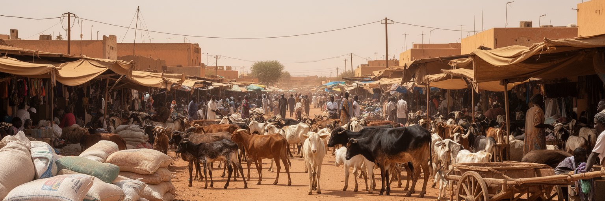
ナジャメナの経済を支えるのは、官庁と石油収入だけではありません。市場では穀物、肉、魚、野菜、布、携帯電話、燃料、部品、輸入食品が売られ、サヘルの農村、遊牧、湖チャド周辺、カメルーン経由の物流が交差します。畜産はチャド社会の重要な資産であり、牛、羊、山羊の取引、飼料、水、屠畜、冷蔵、輸送が都市の食と雇用を支えます。市場の価格は雨、治安、国境規制、燃料費、通貨、援助物資の動きに敏感に反応します。露店主、荷役、運転手、修理工、両替商、食堂、家事労働者は、公式統計に出にくい都市経済の中心です。舗装された大通りから一歩入ると、砂地の路地で細かな信用取引が残ります。ナジャメナの商業を読むには、巨大なショッピング施設ではなく、朝の市場の混雑、家畜の匂い、川を越える小口物流、女性の小商いを見なければなりません。生活費の上昇は、家計だけでなく社会の安定にも直結します。市場は単なる買い物の場所ではなく、都市が危機を吸収する装置です。雨が遅れれば牧草と穀物の価格が上がり、道路が悪ければ肉や野菜の到着が遅れます。家族は少量ずつ買い、店主は顔見知りへ掛け売りし、運転手は燃料代を運賃へ転嫁します。市場の交渉は、都市が不確実な環境の中で生き延びるための金融であり情報網でもあります。ここでは値段の会話そのものが、天候、治安、国境、為替を読むニュースになります。商人の耳は、首都の早い警報装置でもあります。
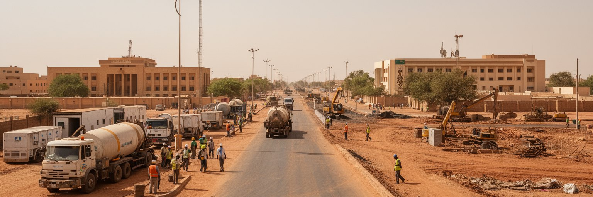
チャドの石油は主に南部の油田と輸出パイプラインに関わるが、その収入の政治的な行き先はナジャメナで決まります。石油収入は国家予算、軍事費、道路、公共建築、公務員給与、輸入支払いを支え、首都の建設景観にも影響します。ですが資源収入は都市の全員を豊かにするとは限りません。価格変動、債務、汚職の疑念、透明性、地方への配分、軍事支出、社会サービスの不足が、石油国家の典型的な緊張を生みます。ナジャメナの燃料価格や発電、幹線道路の補修、官庁の支払い遅れは、遠い国際市場と結びついています。資源を持つ国の首都では、富の見え方と貧しさの見え方が同時に強くなります。新しい建物や道路が増えても、水道、学校、医療、排水、住宅が追いつかなければ、都市の不満は残ります。石油を読むことは、油田そのものではなく、収入がどのような制度で使われ、誰の暮らしに届くのかを見ることです。ナジャメナはその問いが集中する場所であり、資源国家の期待と失望が街路に現れる首都です。燃料スタンドの行列や発電機の音は、石油国であってもエネルギーが安定して届くとは限らないことを示します。資源収入が教育、保健、排水、農村道路へ回るか、短期の治安支出へ偏るかで、首都と地方の信頼関係は変わります。資源の価値は、地下ではなく予算の使い道で測られます。都市の道路や庁舎は、資源収入の見える成果であると同時に、配分の偏りを問う証拠にもなります。
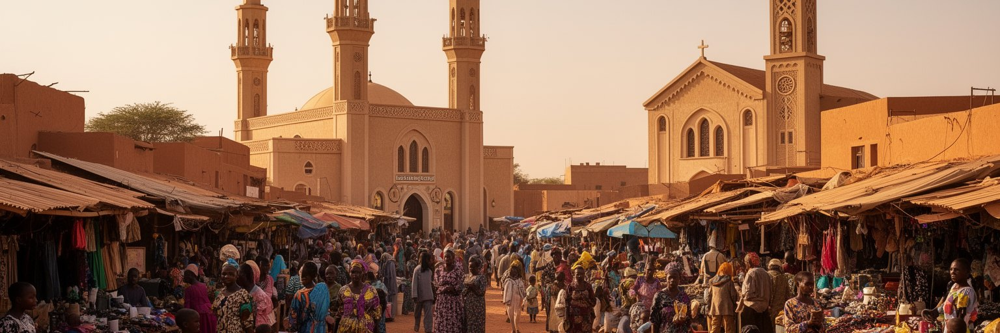
ナジャメナでは、イスラムの礼拝、キリスト教会、家族儀礼、地域の助け合いが都市の時間を区切ります。公用語はフランス語とアラビア語ですが、家庭、市場、移動の場では多くの民族語が使われます。言語は単なる会話手段ではなく、商売の信用、行政手続き、学校教育、宗教指導、親族関係を左右します。金曜礼拝の人の流れ、日曜の教会、結婚式、葬儀、ラマダンの食事、クリスマスの集まりは、都市の暦を作ります。宗教はしばしば政治や対立の文脈で語られますが、日常では困った時に誰を頼るか、食事をどう分けるか、子どもをどこで学ばせるかという実用的な関係でもあります。多言語の都市では、行政の情報が届かない人、病院で症状を説明しにくい人、学校で支援を必要とする子どもが出やすいです。ナジャメナの多様性を読むには、モスクや教会の建築だけでなく、市場の呼び声、家庭の言葉、宗教団体の福祉、隣人の相互扶助を見る必要があります。信仰と言語は、国家が届きにくい場所で都市の安全網になります。礼拝所や教会は、災害時の連絡、葬儀費用の助け合い、若者の相談、移住者の紹介にも関わります。異なる言葉を話す人が隣り合う都市では、翻訳できる人や仲介できる長老の役割が大きいです。宗教と多言語性は、分断の原因である前に、複雑な首都を日々運営する社会技術です。誰の言葉で助けを求められるかは、都市の安心を左右します。
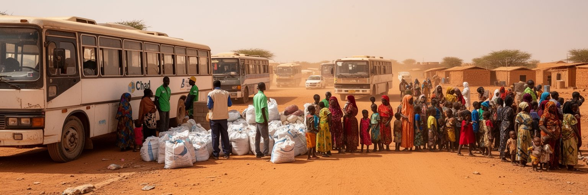
チャドはスーダン、中央アフリカ、ナイジェリア、リビア方面の危機に囲まれ、国内にも避難と治安の問題を抱えます。ナジャメナには政府、国連機関、NGO、大使館、物流業者、医療団体が集まり、難民や国内避難民への対応、食料、保健、教育、治安情報の調整が行われます。援助は人命を支えますが、同時に都市の家賃、雇用、車両、ホテル、通訳、警備、倉庫需要を変える経済でもあります。支援組織で働く専門職と、非正規の清掃、運転、荷役、警備の労働は同じ援助空間を作りますが、賃金と安定性は大きく違います。避難してきた人は、首都で仕事、学校、医療、身分証、住まいを探します。受け入れる地域にも水、土地、物価、公共サービスの負担が増えます。ナジャメナを人道支援の拠点として見る時、倉庫や白い車両だけではなく、長く滞在する家族の生活再建を見なければなりません。危機は一時的なニュースではなく、都市の人口構成と労働市場を少しずつ変えます。援助は都市を外へつなぐ回路であり、同時に依存と格差も生みます。支援の対象にならない貧しい住民から見れば、外から来た資金と車両は複雑な感情を生むこともあります。援助機関が借りる住宅や事務所は地区の相場を押し上げ、通訳や運転手には新しい機会を作ります。人道支援は善意だけでなく、都市経済の一部として慎重に読む必要があります。支援が終わった後に残る学校、井戸、技能、信頼関係まで見て、初めて都市への効果が分かります。
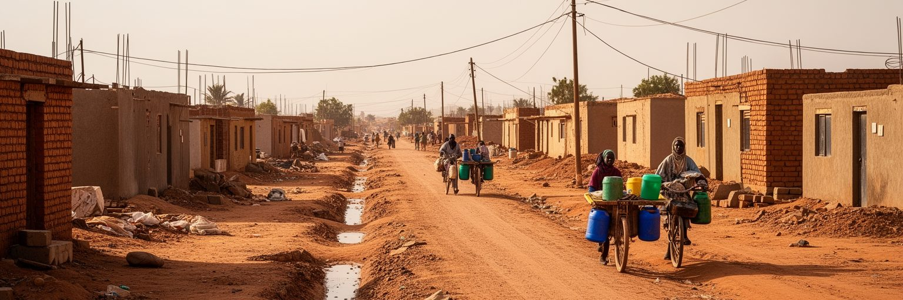
ナジャメナは人口増加と地方からの移動によって外側へ広がっています。新しい住宅地や簡易な建物が増える一方、舗装道路、排水、水道、電力、学校、診療所、ごみ収集は十分に追いつかない場所が多いです。乾季には砂と埃が家の中へ入り、雨季にはぬかるみと冠水で通学や通勤が難しくなります。水を買う家庭、停電に備える商店、発電機の燃料を気にする病院、遠い学校へ歩く子どもは、都市の成長を身体で経験しています。住宅問題は高層マンションの不足ではなく、安全な土地、洪水を避ける場所、家賃、家族の人数、日陰、トイレ、井戸、交通費の焦点です。建設業は雇用を作りますが、土地権利や計画の不明確さは住民を不安定にします。ナジャメナの暮らしを読むには、都心の行政施設よりも、郊外の未舗装道路と排水路を見る必要があります。都市が大きくなるほど、公共サービスが誰に届き、誰が自力で補っているかが問われます。インフラは景観ではなく、毎日の健康と時間を決める基礎です。家の近くに水場があるか、夜に灯りがあるか、雨の日に病院へ行けるかで、同じ首都の中でも生活の安全は大きく違います。土地を正式に持てない住民は、改善への投資もしにくいです。都市計画の遅れは、個人の努力では埋められない負担として家庭に降りてきます。安い土地ほど遠く、遠いほど交通費が重いです。住まいは家計、教育、健康を同時に左右します。
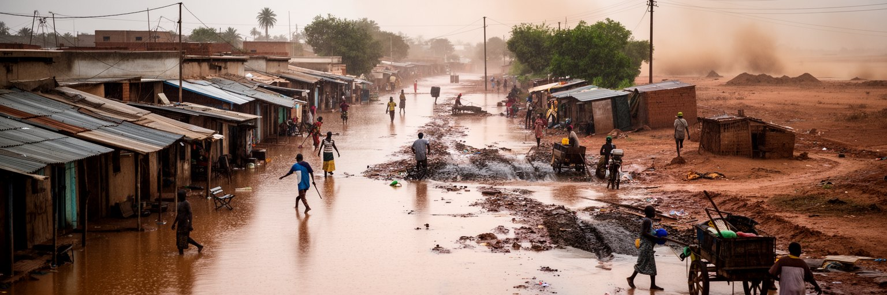
ナジャメナの気候は暑く、乾季の長さと雨季の集中が生活を大きく分けます。乾季には砂塵、強い日差し、水不足、屋外労働の疲労が問題になり、雨季には豪雨、川の増水、排水不良、道路の泥、感染症のリスクが高まります。気候変動で降雨の強さや時期が不安定になれば、農村の収穫、家畜の移動、食料価格、都市への移住にも影響が及びます。チャリ川沿いや低地の住民は洪水に弱く、仮設的な住宅や排水のない地区ほど被害が大きいです。暑さは学校、病院、市場、祈りの時間、交通、食品保存を変え、停電時には扇風機や冷蔵が使えない問題も重なります。ナジャメナの気候リスクは、遠い環境問題ではなく、今日の水の確保と明日の食料価格の焦点です。対策には堤防、排水、早期警戒、日陰、井戸、水質管理、保健、住宅地の計画が必要になります。乾いたサヘルの首都でありながら、洪水にも苦しむという二重性が、この都市の脆さを作ります。気候を読むことは、都市の貧困と公共投資の不足を読むことでもあります。暑い季節には屋外で働く人ほど体力を奪われ、学校の学習時間や市場の客足も変わります。冠水後には井戸や排水路の汚染が健康を脅かし、蚊や下痢性疾患への備えが必要になります。気候への適応は、堤防だけでなく日陰、水、保健、住宅を結ぶ生活政策です。早く情報が届き、避難できる道が残るかどうかが、雨季の被害を左右します。
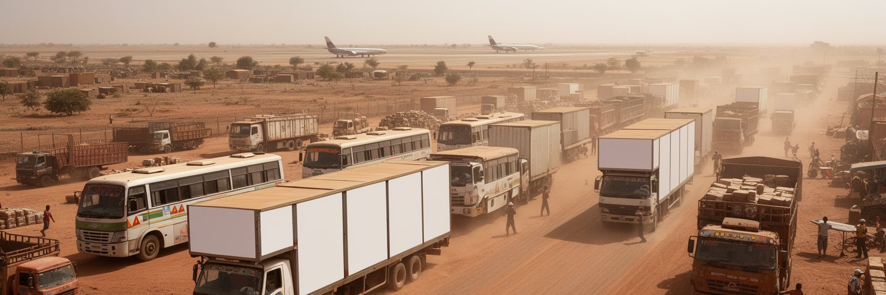
ナジャメナは海から遠い内陸首都であり、輸入品の多くはカメルーンの港や近隣国を経由して長い道路で届きます。燃料、米、小麦粉、建材、医薬品、機械、携帯端末、援助物資の価格には、国境手続き、道路状態、治安、燃料費、トラック不足が反映されます。市内ではミニバス、タクシー、バイク、荷車、徒歩が移動を支え、暑さと砂、未舗装道路、渋滞、検問が時間を奪います。空港は外交、援助、軍事、商用移動の重要な入口ですが、多くの住民の日常は道路と市場に依存しています。物流が乱れれば、店の棚、病院の薬、建設現場、家計の食費がすぐに影響を受けます。ナジャメナの交通を読むには、都市内の移動だけでなく、港から首都までの距離を考える必要があります。内陸性は地理の説明ではなく、物価、国家安全保障、援助、商売の条件です。舗装道路一本の改善が、通勤時間だけでなく食料価格や救急搬送を変えます。交通網の弱さは、貧しい家庭ほど強く感じます。移動の負担は、首都の生活費そのものになっています。雨季に道が傷めば、通勤者だけでなく市場の仕入れも遅れます。燃料が不足すれば発電機、バイク、給水車、病院の運用まで揺らぎます。内陸物流の都市では、交通政策は商業政策であり、保健政策でもあります。道の信頼性が、都市の安心を支えます。運転手の判断、検問の待ち時間、橋の混雑は、数字に出にくい都市のコストになります。
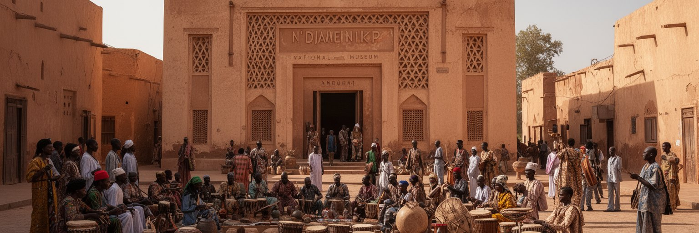
ナジャメナは、植民地期のフォールラミから改名された歴史を持ちます。都市名の変化は、フランス軍事拠点としての過去から、チャドの独自性を示す首都へ移る象徴でもありました。国立博物館や文化施設は、湖チャド流域、サハラ、サヘル、南部の農耕社会、遊牧、考古学、音楽、織物、現代政治の記憶を集める役割を持ちます。ですが文化施設の維持は簡単ではありません。予算、保存環境、治安、教育、観光客の少なさ、資料の保護が課題になります。都市の文化は博物館だけでなく、結婚式の音楽、市場の布、茶を飲む時間、路上の修理、宗教行事、サッカー観戦、家族の語りにもあります。ナジャメナを文化都市として読むには、華やかな国際イベントより、日常の中で多様な地域の人が出会い、言葉と音楽と食を持ち寄る場を見る必要があります。首都は国家の展示室であると同時に、地方から来た人々が記憶を持ち込む交差点です。文化を守ることは、過去を飾るだけでなく、若い世代が自分の国を複数の物語として理解できる場を残すことでもあります。紛争や財政難の時期には、文化施設は後回しにされやすいが、社会が自分を語り直す場所としての価値は大きいです。学校で学ぶ歴史、家庭で語られる移動の記憶、博物館の展示、市場の音楽がつながると、首都は単なる行政中心ではなく、国の多様性を保管する器になります。記憶を共有する場があるほど、異なる地域出身者が同じ都市で暮らす意味を見つけやすいです。
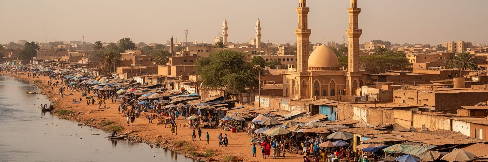
ナジャメナは、巨大な金融都市や観光都市とは違う方法で重要です。ここでは国家の統治、国境の商売、石油収入、援助、避難、信仰、市場、川の水位、砂塵、洪水が、住民の生活に直接入り込みます。首都でありながら、インフラの不足や気候の厳しさが日常を制約し、国際機関や外交団の存在が世界との接続を作ります。対岸のクッセリ、南部の農村、北と東の治安問題、カメルーンの港、湖チャド流域は、すべてこの街の物価と人の流れに関わります。ナジャメナを読む時、貧困や危機だけを強調すると、住民が作る市場、信仰、家族、商売、音楽、助け合いの力を見落とします。逆に首都の機能だけを見ると、水、電気、道路、住まい、食料価格の不安が消えてしまいます。大切なのは、国家の大きな話と日々の小さな工夫を同じ地図で見ることです。川沿いの低地、官庁前の警備、市場の値段、礼拝の時間、雨季の道路を重ねると、ナジャメナはサヘルの都市化が抱える希望と脆さを映す首都として見えてきます。ここでは都市の成熟が、高層ビルの数ではなく、暑さと洪水の中で誰が安全に暮らせるかで測られます。ナジャメナの強さは、制度が十分でない時にも人々が関係を作り、商売を続け、家族を守る粘りにあります。ですがその粘りを当然視すれば、公共投資の不足は隠れてしまいます。サヘルの首都としての価値は、危機の多さではなく、危機の中で生活を組み立てる人々と、その生活を支える制度を同時に考えさせる点にあります。